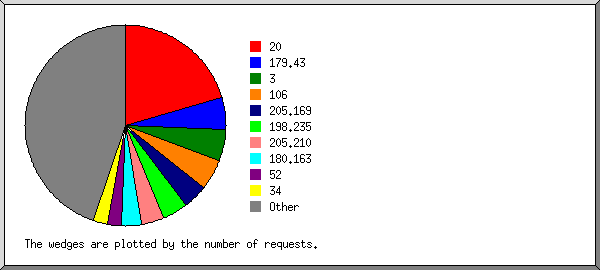
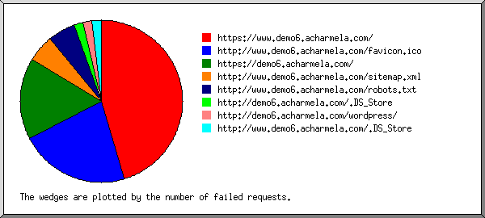
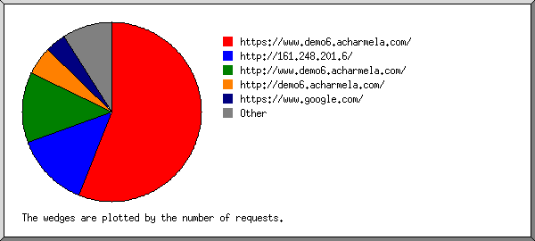
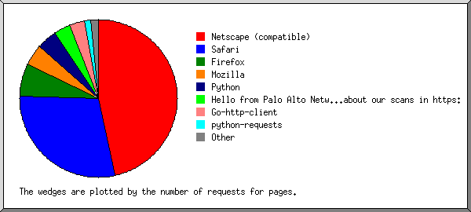
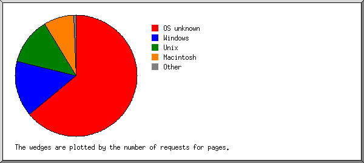
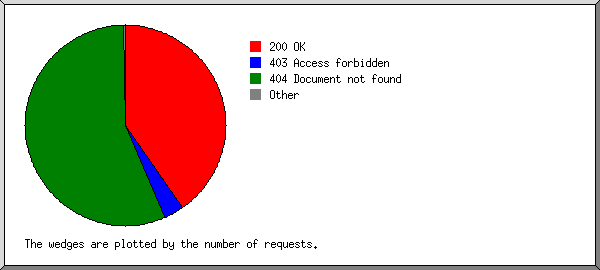
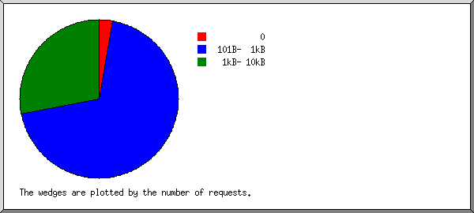
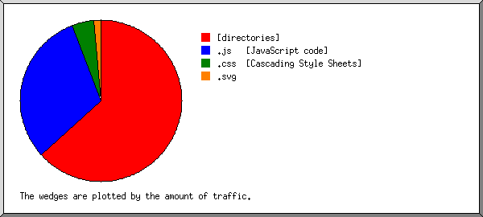
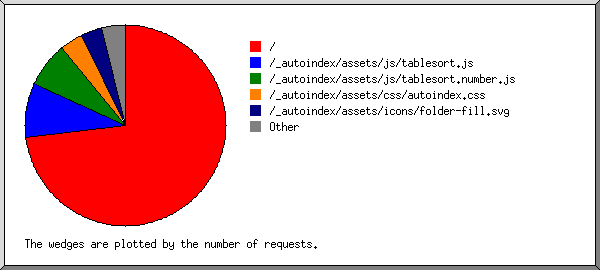

Web Server Statistics for demo6.acharmela.com
Web Server Statistics for demo6.acharmela.com
Program started on Thu, Jul 31 2025 at 11:39 AM.
Analyzed requests from Sun, Jul 06 2025 at 9:59 AM to Wed, Jul 30 2025 at 8:56 PM (24.46 days).
Web Server Statistics for demo6.acharmela.comProgram started on Thu, Jul 31 2025 at 11:39 AM.
Analyzed requests from Sun, Jul 06 2025 at 9:59 AM to Wed, Jul 30 2025 at 8:56 PM (24.46 days).
(Go To: Top | General Summary | Monthly Report | Daily Summary | Hourly Summary | Domain Report | Organization Report | Failed Referrer Report | Referring Site Report | Browser Report | Browser Summary | Operating System Report | Status Code Report | File Size Report | File Type Report | Directory Report | Request Report)
Figures in parentheses refer to the 7-day period ending Jul 31 2025 at 11:39 AM.
Successful requests: 206 (23)
Average successful requests per day: 8 (3)
Successful requests for pages: 138 (15)
Average successful requests for pages per day: 5 (2)
Failed requests: 148 (1)
Distinct files requested: 15 (79)
Distinct hosts served: 101 (137)
Data transferred: 197.09 kilobytes (22.51 kilobytes)
Average data transferred per day: 8.06 kilobytes (3.22 kilobytes)
(Go To: Top | General Summary | Monthly Report | Daily Summary | Hourly Summary | Domain Report | Organization Report | Failed Referrer Report | Referring Site Report | Browser Report | Browser Summary | Operating System Report | Status Code Report | File Size Report | File Type Report | Directory Report | Request Report)
Each unit ( ) represents 4 requests for pages or part thereof.
) represents 4 requests for pages or part thereof.
| month | #reqs | #pages | |
|---|---|---|---|
| Jul 2025 | 206 | 138 |   |
Busiest month: Jul 2025 (138 requests for pages).
(Go To: Top | General Summary | Monthly Report | Daily Summary | Hourly Summary | Domain Report | Organization Report | Failed Referrer Report | Referring Site Report | Browser Report | Browser Summary | Operating System Report | Status Code Report | File Size Report | File Type Report | Directory Report | Request Report)
Each unit () represents 2 requests for pages or part thereof.
| day | #reqs | #pages | |
|---|---|---|---|
| Sun | 73 | 46 |   |
| Mon | 46 | 32 | |
| Tue | 12 | 12 | |
| Wed | 24 | 22 |  |
| Thu | 2 | 2 | |
| Fri | 27 | 10 | |
| Sat | 22 | 14 | |
(Go To: Top | General Summary | Monthly Report | Daily Summary | Hourly Summary | Domain Report | Organization Report | Failed Referrer Report | Referring Site Report | Browser Report | Browser Summary | Operating System Report | Status Code Report | File Size Report | File Type Report | Directory Report | Request Report)
Each unit () represents 1 request for a page.
| hour | #reqs | #pages | |
|---|---|---|---|
| 0 | 19 | 11 | |
| 1 | 6 | 6 | |
| 2 | 7 | 7 | |
| 3 | 6 | 6 | |
| 4 | 7 | 7 | |
| 5 | 0 | 0 | |
| 6 | 4 | 4 | |
| 7 | 16 | 10 | |
| 8 | 20 | 3 | |
| 9 | 7 | 7 | |
| 10 | 24 | 16 | |
| 11 | 12 | 9 | |
| 12 | 13 | 9 | |
| 13 | 5 | 5 | |
| 14 | 8 | 6 | |
| 15 | 6 | 4 | |
| 16 | 0 | 0 | |
| 17 | 3 | 1 | |
| 18 | 31 | 15 | |
| 19 | 0 | 0 | |
| 20 | 2 | 2 | |
| 21 | 4 | 4 | |
| 22 | 4 | 4 | |
| 23 | 2 | 2 | |
(Go To: Top | General Summary | Monthly Report | Daily Summary | Hourly Summary | Domain Report | Organization Report | Failed Referrer Report | Referring Site Report | Browser Report | Browser Summary | Operating System Report | Status Code Report | File Size Report | File Type Report | Directory Report | Request Report)
Listing domains, sorted by the amount of traffic.
| #reqs | %bytes | domain |
|---|---|---|
| 206 | 100% | [unresolved numerical addresses] |
(Go To: Top | General Summary | Monthly Report | Daily Summary | Hourly Summary | Domain Report | Organization Report | Failed Referrer Report | Referring Site Report | Browser Report | Browser Summary | Operating System Report | Status Code Report | File Size Report | File Type Report | Directory Report | Request Report)

Listing the top 20 organizations by the number of requests, sorted by the number of requests.
| #reqs | %bytes | organization |
|---|---|---|
| 18 | 11.16% | 179.43 |
| 14 | 5.37% | 3 |
| 12 | 10.36% | 106 |
| 11 | 4.95% | 40 |
| 10 | 4.66% | 52 |
| 10 | 4.44% | 180.163 |
| 8 | 2.74% | 149.57 |
| 8 | 2.74% | 65.108 |
| 7 | 4.77% | 198.235 |
| 6 | 1.02% | 195.211 |
| 6 | 4.08% | 205.210 |
| 6 | 2.65% | 185.114 |
| 5 | 2.31% | 93 |
| 5 | 2.31% | 95 |
| 5 | 2.31% | 205.169 |
| 5 | 2.31% | 185.159 |
| 5 | 2.31% | 89 |
| 4 | 2.33% | 91 |
| 4 | 1.37% | 23 |
| 3 | 1.37% | 5 |
| 54 | 24.49% | [not listed: 38 organizations] |
(Go To: Top | General Summary | Monthly Report | Daily Summary | Hourly Summary | Domain Report | Organization Report | Failed Referrer Report | Referring Site Report | Browser Report | Browser Summary | Operating System Report | Status Code Report | File Size Report | File Type Report | Directory Report | Request Report)

Listing referring URLs, sorted by the number of failed requests.
(Go To: Top | General Summary | Monthly Report | Daily Summary | Hourly Summary | Domain Report | Organization Report | Failed Referrer Report | Referring Site Report | Browser Report | Browser Summary | Operating System Report | Status Code Report | File Size Report | File Type Report | Directory Report | Request Report)

Listing referring sites, sorted by the number of requests.
| #reqs | site |
|---|---|
| 42 | https://www.demo6.acharmela.com/ |
| 4 | http://161.248.201.6/ |
| 1 | https://www.google.com/ |
| 1 | https://lastiksaticisi.com.bilgiislem.net.tr/ |
| 1 | http://kanqiuzb-pd.com/ |
| 1 | http://demo6.acharmela.com/ |
| 1 | https://180emails.com.br/ |
| 1 | http://www.demo6.acharmela.com/ |
| 1 | https://demo6.acharmela.com/ |
(Go To: Top | General Summary | Monthly Report | Daily Summary | Hourly Summary | Domain Report | Organization Report | Failed Referrer Report | Referring Site Report | Browser Report | Browser Summary | Operating System Report | Status Code Report | File Size Report | File Type Report | Directory Report | Request Report)

Listing the top 40 browsers by the number of requests for pages, sorted by the number of requests for pages.
| #reqs | #pages | browser |
|---|---|---|
| 12 | 12 | Mozilla/5.0 (X11; Linux i686; rv:109.0) Gecko/20100101 Firefox/120.0 |
| 12 | 12 | Mozilla/5.0 (compatible; MJ12bot/v1.4.8; http://mj12bot.com/) |
| 8 | 8 | Python/3.9 aiohttp/3.8.1 |
| 8 | 8 | Mozilla/5.0 (compatible; CensysInspect/1.1; +https://about.censys.io/) |
| 7 | 7 | Mozilla/5.0 (Macintosh; Intel Mac OS X 10_7_0) AppleWebKit/535.11 (KHTML, like Gecko) Chrome/17.0.963.56 Safari/535.11 |
| 6 | 6 | Mozilla/5.0 (Windows NT 10.0; Win64; x64) AppleWebKit/537.36 (KHTML, like Gecko) Chrome/108.0.0.0 Safari/537.36 |
| 6 | 6 | Mozilla/5.0 zgrab/0.x |
| 5 | 5 | Hello from Palo Alto Networks, find out more about our scans in https://docs-cortex.paloaltonetworks.com/r/1/Cortex-Xpanse/Scanning-activity |
| 4 | 4 | Mozilla/5.0 (X11; Linux x86_64; rv:137.0) Gecko/20100101 Firefox/137.0 |
| 4 | 4 | Mozilla/5.0 (Macintosh; Intel Mac OS X 10_15_7) AppleWebKit/537.36 (KHTML, like Gecko) Chrome/120.0.0.0 Safari/537.36 Edg/120.0.0.0 |
| 4 | 4 | Mozilla/5.0 (X11; Linux x86_64) AppleWebKit/537.36 (KHTML, like Gecko) Chrome/137.0.0.0 Safari/537.36 |
| 4 | 4 | Go-http-client/1.1 |
| 3 | 3 | python-requests/2.31.0 |
| 11 | 3 | Mozilla/5.0 (Windows NT 6.1; WOW64) AppleWebKit/537.36 (KHTML, like Gecko) Chrome/45.0.2454.85 Safari/537.36 |
| 10 | 2 | Mozilla/5.0 (Windows NT 10.0; Win64; x64) AppleWebKit/537.36 (KHTML, like Gecko) Chrome/104.0.0.0 Safari/537.36 |
| 4 | 2 | Mozilla/5.0 (Windows NT 6.1) AppleWebKit/537.36 (KHTML, like Gecko) Chrome/49.0.2623.112 Safari/537.36 |
| 2 | 2 | Go-http-client/2.0 |
| 6 | 2 | Mozilla/5.0 (Windows NT 10.0; Win64; x64) AppleWebKit/537.36 (KHTML, like Gecko) Chrome/132.0.0.0 Safari/537.36 |
| 2 | 2 | Mozilla/5.0 (Windows NT 10.0; Win64; x64) AppleWebKit/537.36 (KHTML, like Gecko) Chrome/137.0.0.0 Safari/537.36 |
| 2 | 2 | python-requests/2.32.3 |
| 1 | 1 | Mozilla/5.0 (X11; Linux i686; rv:124.0) Gecko/20100101 Firefox/124.0 |
| 1 | 1 | Mozilla/5.0 (Windows NT 10.0; Win64; x64) AppleWebKit/537.36 (KHTML, like Gecko) Chrome/138.0.0.0 Safari/537.36 |
| 1 | 1 | Mozilla/5.0 (Linux; Android 10; K) AppleWebKit/537.36 (KHTML, like Gecko) Chrome/131.0.0.0 Mobile Safari/537.36 |
| 1 | 1 | Mozilla/5.0 (Linux; Android 9; ASUS_X00TD) AppleWebKit/537.36 (KHTML, like Gecko) Chrome/76.0.3809.111 Mobile Safari/537.36 |
| 1 | 1 | Mozilla/5.0 (iPad; CPU OS 11_0 like Mac OS X) AppleWebKit/604.1.38 (KHTML, like Gecko) Version/11.0 Mobile/15A5362a Safari/604.1 |
| 1 | 1 | Mozilla/5.0 (Linux; Android 6.0; HTC One M9 Build/MRA439600) AppleWebKit/537.36 (KHTML, like Gecko) Chrome/52.0.2717.98 Mobile Safari/537.3 |
| 5 | 1 | Mozilla/5.0 (X11; Linux x86_64) AppleWebKit/537.36 (KHTML, like Gecko) Chrome/132.0.0.0 Safari/537.36 |
| 1 | 1 | Mozilla/5.0 (Macintosh; Intel Mac OS X 10_9_2) AppleWebKit/537.36 (KHTML, like Gecko) Chrome/33.0.1750.152 Safari/537.36 |
| 1 | 1 | Mozilla/5.0 (Linux; Android 10; K) AppleWebKit/537.36 (KHTML, like Gecko) Chrome/132.0.0.0 Mobile Safari/537.36 |
| 4 | 1 | Mozilla/5.0 (Linux; Android 6.0; Nexus 5 Build/MRA58N) AppleWebKit/537.36 (KHTML, like Gecko) Chrome/130.0.0.0 Mobile Safari/537.36 |
| 1 | 1 | Mozilla/5.0 (Windows NT 10.0) AppleWebKit/537.36 (KHTML, like Gecko) Chrome/60.0.3112.91 Safari/537.36 Vivaldi/1.92.917.39 |
| 1 | 1 | Mozilla/5.0 (compatible; InternetMeasurement/1.0; +https://internet-measurement.com/) |
| 1 | 1 | Mozilla/5.0 (X11; Ubuntu; Linux x86_64; rv:109.0) Gecko/20100101 Firefox/117.0 |
| 1 | 1 | Mozilla/5.0 (Windows NT 10.0; Win64; x64) AppleWebKit/537.36 (KHTML, like Gecko) Chrome/137.0.0.0 Safari/537.36 Edg/137.0.0.0 |
| 1 | 1 | Mozilla/5.0 (Macintosh; Intel Mac OS X 10.15) AppleWebKit/605.1.15 (KHTML, like Gecko) Version/17.5 Safari/605.1.15 |
| 5 | 1 | Mozilla/5.0 (Windows NT 10.0; Win64; x64) AppleWebKit/537.36 (KHTML, like Gecko) Chrome/133.0.0.0 Safari/537.36 |
| 5 | 1 | Mozilla/5.0 (Windows NT 10.0; Win64; x64) AppleWebKit/537.36 (KHTML, like Gecko) Chrome/117.0.5938.132 Safari/537.36 |
| 5 | 1 | Mozilla/5.0 (X11; Linux x86_64) AppleWebKit/537.36 (KHTML, like Gecko) Chrome/138.0.0.0 Safari/537.36 |
| 1 | 1 | Mozilla/5.0 (X11; Linux x86_64; rv:83.0) Gecko/20100101 Firefox/83.0 |
| 5 | 1 | Mozilla/5.0 (Windows NT 10.0; Win64; x64) AppleWebKit/537.36 (KHTML, like Gecko) Chrome/130.0.0.0 Safari/537.36 |
| 23 | 0 | [not listed: 22 browsers] |
(Go To: Top | General Summary | Monthly Report | Daily Summary | Hourly Summary | Domain Report | Organization Report | Failed Referrer Report | Referring Site Report | Browser Report | Browser Summary | Operating System Report | Status Code Report | File Size Report | File Type Report | Directory Report | Request Report)

Listing browsers with at least 1 request for a page, sorted by the number of requests for pages.
| # | #reqs | #pages | browser |
|---|---|---|---|
| 1 | 109 | 48 | Safari |
| 98 | 39 | Safari/537 | |
| 7 | 7 | Safari/535 | |
| 1 | 1 | Safari/604 | |
| 2 | 1 | Safari/605 | |
| 2 | 21 | 21 | Netscape (compatible) |
| 3 | 20 | 19 | Firefox |
| 12 | 12 | Firefox/120 | |
| 4 | 4 | Firefox/137 | |
| 1 | 1 | Firefox/117 | |
| 1 | 1 | Firefox/83 | |
| 1 | 1 | Firefox/124 | |
| 4 | 8 | 8 | Python |
| 8 | 8 | Python/3 | |
| 5 | 9 | 6 | Mozilla |
| 6 | 6 | 6 | Go-http-client |
| 4 | 4 | Go-http-client/1 | |
| 2 | 2 | Go-http-client/2 | |
| 7 | 5 | 5 | Hello from Palo Alto Networks, find out more about our scans in https: |
| 5 | 5 | Hello from Palo Alto Networks, find out more about our scans in https://docs-cortex | |
| 8 | 5 | 5 | python-requests |
| 5 | 5 | python-requests/2 | |
| 3 | 0 | [not listed: 3 browsers] |
(Go To: Top | General Summary | Monthly Report | Daily Summary | Hourly Summary | Domain Report | Organization Report | Failed Referrer Report | Referring Site Report | Browser Report | Browser Summary | Operating System Report | Status Code Report | File Size Report | File Type Report | Directory Report | Request Report)

Listing operating systems, sorted by the number of requests for pages.
| # | #reqs | #pages | OS |
|---|---|---|---|
| 1 | 55 | 51 | OS unknown |
| 2 | 47 | 30 | Unix |
| 47 | 30 | Linux | |
| 3 | 66 | 23 | Windows |
| 46 | 18 | Windows NT | |
| 19 | 5 | Unknown Windows | |
| 1 | 0 | Windows CE | |
| 4 | 18 | 14 | Macintosh |
(Go To: Top | General Summary | Monthly Report | Daily Summary | Hourly Summary | Domain Report | Organization Report | Failed Referrer Report | Referring Site Report | Browser Report | Browser Summary | Operating System Report | Status Code Report | File Size Report | File Type Report | Directory Report | Request Report)

Listing status codes, sorted numerically.
| #reqs | status code |
|---|---|
| 206 | 200 OK |
| 25 | 403 Access forbidden |
| 123 | 404 Document not found |
(Go To: Top | General Summary | Monthly Report | Daily Summary | Hourly Summary | Domain Report | Organization Report | Failed Referrer Report | Referring Site Report | Browser Report | Browser Summary | Operating System Report | Status Code Report | File Size Report | File Type Report | Directory Report | Request Report)

| size | #reqs | %bytes |
|---|---|---|
| 0 | 7 | |
| 1B- 10B | 0 | |
| 11B- 100B | 0 | |
| 101B- 1kB | 131 | 39.07% |
| 1kB- 10kB | 68 | 60.93% |
(Go To: Top | General Summary | Monthly Report | Daily Summary | Hourly Summary | Domain Report | Organization Report | Failed Referrer Report | Referring Site Report | Browser Report | Browser Summary | Operating System Report | Status Code Report | File Size Report | File Type Report | Directory Report | Request Report)

Listing extensions with at least 0.1% of the traffic, sorted by the amount of traffic.
| #reqs | %bytes | extension |
|---|---|---|
| 138 | 55.94% | [directories] |
| 46 | 35.77% | .js [JavaScript code] |
| 11 | 6.43% | .css [Cascading Style Sheets] |
| 11 | 1.85% | .svg |
(Go To: Top | General Summary | Monthly Report | Daily Summary | Hourly Summary | Domain Report | Organization Report | Failed Referrer Report | Referring Site Report | Browser Report | Browser Summary | Operating System Report | Status Code Report | File Size Report | File Type Report | Directory Report | Request Report)

Listing directories with at least 0.01% of the traffic, sorted by the amount of traffic.
| #reqs | %bytes | directory |
|---|---|---|
| 138 | 55.94% | [root directory] |
| 68 | 44.06% | /_autoindex/ |
(Go To: Top | General Summary | Monthly Report | Daily Summary | Hourly Summary | Domain Report | Organization Report | Failed Referrer Report | Referring Site Report | Browser Report | Browser Summary | Operating System Report | Status Code Report | File Size Report | File Type Report | Directory Report | Request Report)

Listing files with at least 20 requests, sorted by the number of requests.
| #reqs | %bytes | last time | file |
|---|---|---|---|
| 138 | 55.94% | Jul/30/25 8:56 PM | / |
| 24 | 32.03% | Jul/27/25 10:07 AM | /_autoindex/assets/js/tablesort.js |
| 22 | 3.75% | Jul/27/25 10:07 AM | /_autoindex/assets/js/tablesort.number.js |
| 22 | 8.28% | Jul/27/25 10:07 AM | [not listed: 2 files] |